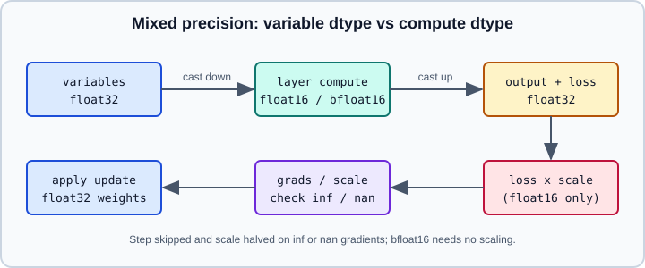

Mixed Precision
|
This content was generated with the assistance of AI and should be verified against the official documentation before being relied on in production. |
Mixed precision runs most of a network in a 16-bit floating-point format while keeping the trainable variables in float32. Done correctly it reduces activation memory and, on suitable hardware, speeds up matrix multiplications and convolutions with little or no loss of accuracy. This page covers the Keras policy API, loss scaling, the places where float32 must be kept, custom training loops and the hardware that benefits. The format theory (exponent and mantissa bits, memory arithmetic) is in Hardware, Memory and Mixed Precision; the PyTorch equivalent is Mixed Precision with torch.amp. Related TensorFlow pages: compile, fit, evaluate and predict, Writing a Training Loop from Scratch, Distributed Training and Performance, XLA and Profiling.
It targets Python 3.13 and TensorFlow 2.21 with Keras 3.15 (TensorFlow 2.22 is "upcoming" and not covered), and was checked against the official documentation on 2026-10-30. Examples were run on Python 3.13 with TensorFlow 2.21 and Keras 3.15 (CPU) on 2026-10-31, with the MNIST example shortened to three epochs; the custom loop was run with a small stand-in for build_model(). Speed-ups need a GPU with Tensor Cores, a TPU or an AMX-capable CPU and were not measured.
Compute dtype and variable dtype
A Keras layer has a dtype policy with two parts: the compute dtype used for its arithmetic and the variable dtype used to store its weights. The default policy float32 uses float32 for both. The two mixed policies are:
| Policy name | Compute dtype | Variable dtype | Typical hardware |
|---|---|---|---|
|
float32 |
float32 |
everything; the default |
|
float16 |
float32 |
NVIDIA GPUs with Tensor Cores (compute capability 7.0 and higher) |
|
bfloat16 |
float32 |
Cloud TPUs, recent Intel Xeon CPUs with AMX |
Weights stay in float32 because the small updates produced late in training would be rounded away in a 16-bit mantissa. During the forward pass each layer casts its floating-point inputs and its variables to the compute dtype, so the activations and the layer outputs are 16-bit. The loss, optimizer state and weight update are float32.

The figure is an original drawing of the data flow described in the TensorFlow mixed precision guide.
Enabling a policy
In Keras 3 the API lives in the standalone keras package; the TensorFlow guide still shows the same calls through tf.keras, which resolves to Keras 3 in TensorFlow 2.21 (see Keras 3 Overview).
import keras
from keras import layers
# Global default for every layer created afterwards
keras.mixed_precision.set_global_policy("mixed_float16")
# Equivalent newer spelling
keras.config.set_dtype_policy("mixed_float16")
policy = keras.config.dtype_policy()
print(policy.compute_dtype, policy.variable_dtype) # float16 float32
# Per-layer override: pass dtype= to a layer
dense32 = layers.Dense(64, dtype="float32")
dense16 = layers.Dense(64, dtype="mixed_float16")
print(dense16.compute_dtype, dense16.variable_dtype) # float16 float32Set the global policy before building the model, because layers read it when they are constructed. Resetting it with set_global_policy("float32") returns to full precision. Layers always convert a dtype argument to a policy object, so dtype="float32" and dtype=keras.DTypePolicy("float32") are equivalent.
The Keras 3 policy API also lists DTypePolicy, DTypePolicyMap (a per-layer-path mapping of policies), FloatDTypePolicy, QuantizedDTypePolicy, QuantizedFloat8DTypePolicy and GPTQDTypePolicy. The quantized policies belong to model compression and are covered on Quantization and Model Optimization.
A complete Keras example
The following model keeps its final softmax in float32. Without that, a float16 softmax can underflow or lose precision.
import keras
from keras import layers
keras.mixed_precision.set_global_policy("mixed_float16")
(x_train, y_train), (x_test, y_test) = keras.datasets.mnist.load_data()
x_train = x_train.reshape(-1, 784).astype("float32") / 255.0 # preprocess in float32
x_test = x_test.reshape(-1, 784).astype("float32") / 255.0
inputs = keras.Input(shape=(784,), name="digits")
x = layers.Dense(4096, activation="relu", name="dense_1")(inputs) # multiples of 8
x = layers.Dense(4096, activation="relu", name="dense_2")(x)
x = layers.Dense(10, name="dense_logits")(x)
outputs = layers.Activation("softmax", dtype="float32", name="predictions")(x)
print(x.dtype, outputs.dtype) # float16 float32
model = keras.Model(inputs, outputs)
model.compile(
loss="sparse_categorical_crossentropy",
optimizer=keras.optimizers.RMSprop(),
metrics=["accuracy"],
)
model.fit(x_train, y_train, batch_size=8192, epochs=5, validation_split=0.2)
print(model.evaluate(x_test, y_test, batch_size=8192))Points to note:
-
The model is built from a float32
Input; the first layer casts the input to float16. -
Model.fitapplies dynamic loss scaling automatically when the global policy ismixed_float16. You do not wrap the optimizer yourself. -
The final
Activationlayer withdtype="float32"casts its input up and computes the softmax in float32. A cleaner alternative is to leave the logits as float16 and usefrom_logits=Truein the loss, but make the model output float32 whichever you choose. -
If the last layer has no activation, add a trailing
layers.Activation("linear", dtype="float32")so predictions and the loss are float32.
Loss scaling
float16 has a small range: values above 65504 overflow and values below roughly \(6 \times 10^{-8}\) underflow to zero. Activations rarely hit these limits, but gradients often do underflow. Loss scaling multiplies the loss by a constant before backpropagation, which shifts every gradient into the representable range, and divides the gradients by the same constant before the update.
A dynamic loss scale picks the constant automatically: it starts large, halves it and skips the step whenever a gradient contains inf or NaN, and doubles it again after a run of good steps. Consequences:
-
The first few steps may be skipped while the scale settles; this is expected and not a bug.
-
The dynamic default is recommended. A fixed scale is possible but needs tuning per model.
-
mixed_bfloat16has the float32 exponent range, so it needs no loss scaling at all.
Keras wraps the optimizer in a LossScaleOptimizer for you in fit. In a custom loop you do it explicitly.
Custom training loops
import keras
import tensorflow as tf
keras.mixed_precision.set_global_policy("mixed_float16")
model = build_model() # your float32-output model
optimizer = keras.optimizers.LossScaleOptimizer(keras.optimizers.RMSprop())
loss_fn = keras.losses.SparseCategoricalCrossentropy()
@tf.function
def train_step(x, y):
with tf.GradientTape() as tape:
predictions = model(x, training=True)
loss = loss_fn(y, predictions)
scaled_loss = optimizer.scale_loss(loss)
grads = tape.gradient(scaled_loss, model.trainable_variables)
optimizer.apply_gradients(zip(grads, model.trainable_variables))
return lossIn Keras 3 the LossScaleOptimizer scales and unscales internally: scale_loss(loss) multiplies by the current scale and apply_gradients divides the gradients before the base optimizer update. The TF 2.x guide shows the older manual form with get_scaled_loss and get_unscaled_gradients on tf.keras.mixed_precision.LossScaleOptimizer; the Keras 3.15 class has neither method (it offers scale_loss, apply_gradients, apply and the dynamic_scale and initial_scale attributes, with an initial scale of 32768), so port such code to the form above. A custom train_step inside fit (see Customizing fit() with train_step) gets the same behaviour from the optimizer that compile created.
Hardware and where it pays off
-
NVIDIA GPUs with compute capability 7.0 or higher (V100, RTX 20 series, A100 and newer) have Tensor Cores and benefit most. Older GPUs such as the P100 (6.0) get no arithmetic speed-up and may run slower.
-
On Ampere (8.0) and newer, TensorFloat-32 already makes float32 matrix multiplications fast, so small models can show no gain from float16. Memory savings still apply, and large models usually still speed up.
-
All Cloud TPUs support bfloat16 natively; use
mixed_bfloat16. Gains are typically smaller than on GPUs because TPU matrix units already work in bfloat16 internally. -
4th-generation Intel Xeon (Sapphire Rapids) and later accelerate
mixed_bfloat16with AMX (TensorFlow 2.12 and later).mixed_float16on x86 CPUs andmixed_bfloat16on CPUs without AMX are significantly slower than float32. -
For Tensor Cores make
Denseunits, convolution filters, recurrent units and the batch size multiples of 8; for TPUs use multiples of 128. Halving the tensor size often lets you double the batch size. -
Very small models are dominated by launch overhead, so mixed precision changes nothing there.
-
XLA can fuse the extra cast operations and recover more speed; see Performance, XLA and Profiling.
Check which devices TensorFlow sees, and a GPU’s compute capability, as follows:
import tensorflow as tf
for gpu in tf.config.list_physical_devices("GPU"):
details = tf.config.experimental.get_device_details(gpu)
print(gpu.name, details.get("device_name"), details.get("compute_capability"))See Devices: CPUs, GPUs and TPUs for device setup.
Pitfalls
-
Preprocessing: run input pipelines in float32 on the CPU; float16 arithmetic on the CPU is slow. Cast only at the model boundary.
-
Numerically sensitive layers: keep the softmax, sigmoid output, large reductions and the loss in float32. Check the layer documentation before assuming a normalization layer computes its statistics in float32.
-
Metrics and evaluation: compare accuracy against a float32 baseline once; mixed precision should match it to within noise.
-
Exported models: a model saved under a mixed policy stores float32 weights but records the policy in its config, so reloading restores the same behaviour. See Saving Keras Models.
-
Dtype mismatches in custom code: a custom layer that mixes a float16 tensor with a float32 constant raises an error. Use
self.compute_dtypefor constants, orkeras.ops.cast. -
Reproducibility: results differ run to run more than in float32 because reduction orders and skipped steps change; see Performance, XLA and Profiling for determinism notes.
An older approach (TensorFlow 1 graph rewrite, tf.train.experimental.enable_mixed_precision_graph_rewrite) and the Keras 2 experimental module tf.keras.mixed_precision.experimental are obsolete; use the policy API above.
References
-
TensorFlow guide, Mixed precision: https://www.tensorflow.org/guide/mixed_precision
-
Keras API, Mixed precision policy: https://keras.io/api/mixed_precision/
-
TensorFlow guide, Use a GPU: https://www.tensorflow.org/guide/gpu
-
Keras API, Optimizers: https://keras.io/api/optimizers/
-
Background: Hardware, Memory and Mixed Precision